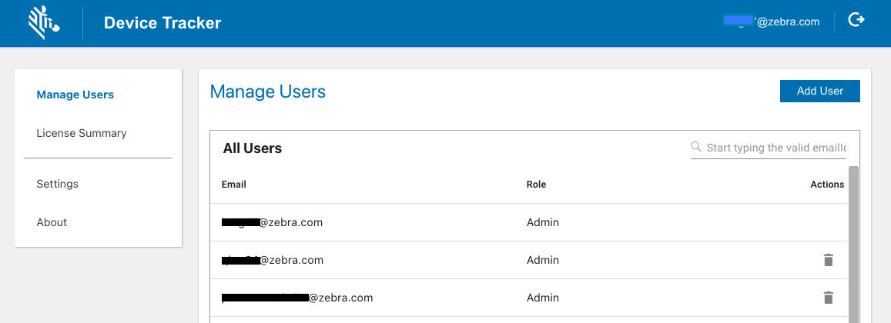

Overview
After Device Tracker installation, the administrator must configure application behavior, and register device, access point (AP) and site information. Different roles exist that determine the functions and capabilities of each user: associate, manager, or administrator.
Administrator Role
Administrator functions and capabilties:
- Administrator login
- Web portal:
- Manage Users
- Configure Device Check-out (optional)
- Set Barcode Prefix (optional)
- Monitor Licenses
- Import Devices
- Import Sites & APs
- Delete Devices
- Monitor devices at the corporate-level and site-level
- All Manager and Associate capabilities.
Manager Role
Manager functions and capabilities:
- Manager login
- Monitor devices at the site-level
- Mark a device for retrieval (To Be Found)
- Mark a device out of service (decommission) with a note (e.g. WiFi issue or display broken)
- Clear a retrieval request
- Device or Site Search
- All Associate capabilities
Associate Role
Associate functions and capabilties:
- Device Check-out/Check-in
- View marked devices list (for retrieval)
- Find devices using the BLE proximity meter and audio chirp
- Mark devices as found or cannot be found
Manage Users
Administrator and manager user accounts are created and managed through the web portal. Access the web portal by entering the URL provided by Zebra in a supported browser.

Device Tracker web portal
Add User
To add an admin or manager user account:
- Login to the web portal as an administrator
- In the web portal, tap Manage Users in the left menu.
- Select the role of the new user: Admin or Manager
- Enter the information prompted, including the email and password based on the following guidelines:
- Login ID guidelines:
- Must be a valid email
- Maximum length: 255 characters
- Special characters allowed prior to '@':
! ~ # $ % ^ & * - _ + = {} | ' / ? - Characters allowed after '@':
. - - Spaces are not allowed
- '@' character is only allowed once
- '.' is only allowed in the middle of alphanumeric characters before and after '@'.
- Password guidelines:
- Minimum length: 6 characters
- Any combination of letters, numbers and symbols (ASCII-standard characters) are accepted
- Login ID guidelines:
- Tap Add User.
- The new user is added to the All Users list.
Delete User
To delete an admin or manager user account (administrators only):
- Login to the web portal as an administrator.
- From the web portal, tap Manage Users in the left menu.
- From the list of users, locate the user to delete and click on the delete icon next to the user.
- Click OK in the confirmation message.
Search for User
Admins or manager user accounts can be searched by email address. The entire email address must be entered. Action can be taken on the user from the search results.
To search for a user:
- Login to the web portal as an administrator.
- From the web portal, tap Manager Users in the left menu.
- Enter the email address to search for in the search field located below the Add User button from the top right of the page. Press the enter key.
- The search results are displayed.
Reset Password
The password can be reset through the web portal or the client app if the administrator or manager forgot the password.
Steps to reset the password in the web portal:
- From the web portal login page, click Forgot your password.
- Enter your email address then click Reset Password.
- A message appears indicating a password reset email is sent.
- Open the email and click on the link.
- Enter in the new password based on the following guidelines:
- Minimum length: 6 characters
- Any combination of letters, numbers and symbols (ASCII-standard characters) are accepted.
- The password is reset with the new password.
Configure Device Check-out
Device check-out is an optional feature that displays an overlay on top of the screen to enforce the user to scan their unique barcode, maintaining user accountability of the device. When enabled, user operation in the check-out screen is limited to only scanning barcodes, preventing device access until the barcode is scanned. If any other app also uses a screen overlay, the check-out/check-in feature may conflict with the other app. For example, this feature cannot be used with Zebra’s MotionWorks Proximity application. By default, no barcode prefix is defined allowing all barcodes to be accepted. Set a barcode prefix to only allow check-out if the barcode scanned begins with the specified prefix.
Check-out/Check-in scenarios:
- Check-out: At the start of a work shift, the user checks-out the device by scanning their unique barcode. This associates the user with the device, as seen in the device card and device details screen.
- Check-in: At the end of a work shift, the user checks-in the device by placing it on a powered cradle or logging out from the top-right menu of the main device screen. After check-in, the user is no longer associated with the device.
Enable device check-out: Access the web portal by entering the URL provided by Zebra in a supported browser.
- Login to the web portal as an administrator.
- Tap Settings in the left menu.
- Enable Checkin/Checkout.
When enabled, checked-out devices appear in the dashboard monitored by administrators and managers.
Set Barcode Prefix
The administrator can configure a prefix to restrict check-out to occur only when barcodes are scanned that begin with the specified prefix in the form of a character string. If a barcode scanned does not contain the prefix, check-out is not successful.
When generating a barcode with the prefix, the specified prefix is followed by the username identifier. The following is a sample barcode containing prefix “NGDTRK-” and username “JohnDoe”:
 Sample barcode with prefix and username: "NGDTRK-JohnDoe"
Sample barcode with prefix and username: "NGDTRK-JohnDoe"
To set the barcode prefix: Access the web portal by entering the URL provided by Zebra in a supported browser.
- Login to the web portal as an administrator.
- Tap Settings in the left menu.
- Enable Checkin/Checkout. This exposes the Prefix field in the Application Configuration screen.
- Enter the desired text for the prefix. Only barcodes that begin with the specified prefix can grant access to the device. If all barcodes should be accepted with no prefix, keep the entry blank.
Register Devices
Administrators register device information along with friendly names and site assignments to aid in identifying, tracking and locating devices. A sample device .CSV file is supplied by Zebra for the administrator to populate with the appropriate data. After making the appropriate modifications, copy the populated .CSV file to the mobile device for device data to be imported through the client app. Importing data either modifies or adds entries to the existing database, unless deleting a device. The data fields are:
| CSV File | Data | Description | Required |
|---|---|---|---|
| Device | ModelNumber | Device model | Yes |
| SerialNumber | Device serial number | Yes | |
| DeviceFriendlyName | Name used to identify device | Optional | |
| SiteName | Site name or location where the device is assigned, useful when finding a device | Optional |
Sample Import Device .CSV file content:
ModelNumber,SerialNumber,DeviceFriendlyName,SiteName
TC51,17009522509812,Inventory1,Chicago
TC51,17009522509813,Inventory2,Los Angeles
When modifying the .CSV file, keep the header information intact and replace the sample data with the appropriate data desired. Special characters, such as '.', '#', '$', '[', or ']', are not supported. The .CSV file cannot be UTF-8 encoded, otherwise an error can occur; it must be saved in a normal comma separated values format.
Import Devices
Import device data to register the device information from the populated .CSV file. A maximum of 20,000 rcords can be imported at one time.
To import the device .CSV file to add/modify device data:
- Copy the populated .CSV file containing device data from the PC to the device root
\Internal shared storagefolder. - In the client app, login as the admin. In the main screen, tap on the options menu at the top right and select Admin/Manager Login. Enter the Administrator credentials and tap Login.
- Tap the top right options menu and select Settings, which is now visible.
- Tap Import Access Points/Sites/Devices.
- Under the section Import Device CSV File, tap Browse File. Browse and select the appropriate .CSV file.
- Under the section Import Device CSV File, tap Upload CSV.
- The device data import is complete. Results are displayed in the Status section at the bottom of the screen.
New devices imported are initially in the Never Connected state until the Device Tracker app is installed on the devices, configured and communicating with the server.
Delete Devices
Deleting a device removes device data from the Device Tracker solution after uninstalling the client app. When a device is deleted, the license is deallocated and released to the license pool. A maximum of 5,000 records can be removed at one time.
Prerequisite: Prior to deleting a device, uninstall the Device Tracker application on the device.
To import the device .CSV file to delete a device:
- Copy the .CSV file containing the removed device record from the PC to the device root
\Internal shared storagefolder. - In the client app, login as the admin. In the main screen, tap on the options menu at the top right and select Admin/Manager Login. Enter the Administrator credentials and tap Login.
- Tap the top right options menu and select Settings, which is now visible.
- Tap Import Access Points/Sites/Devices.
- Under the section Import Delete Device CSV File, tap Browse File. Browse and select the appropriate .CSV file.
- Under the section Import Delete Device CSV File, tap Upload CSV.
- The specified device data is removed from the system. Results are displayed in the Status section at the bottom of the screen.
Sample Delete Device .CSV file content:
ModelNumber,SerialNumber
TC51,17009522509812
TC51,17009522509813
When modifying the .CSV file, keep the header information intact and replace the sample data with the appropriate data desired. It is particularly important for the AP location friendly name to be easily understood for users to determine the location within the facility when finding a device. Special characters, such as '.', '#', '$', '[', or ']', are not supported. The .CSV file cannot be UTF-8 encoded, otherwise an error can occur; it must be saved in a normal comma separated values format.
Register Access Points & Sites
Similar to registering devices, administrators register site names and access points with friendly names to aid in identifying, tracking and locating devices. A sample AP file is supplied by Zebra for the administrator to populate with the appropriate data. Copy the populated .CSV file to the mobile device for the data to be imported through the client app. Importing data either modifies or adds entries to the existing database. The data fields are:
| CSV File | Data | Description | Required |
|---|---|---|---|
| AP | SiteName | Site name or location | Yes |
| BSSID | Access point MAC address | Yes | |
| AssetName | Name used by IT admin for drawings, labeling of hardware, etc. (For future use only – does not have any impact whether or not it is in use.) |
Optional | |
| LocationFriendlyName | Access point location friendly name, useful to identify general device location | Optional |
Sample Import AP .CSV file content:
SiteName,BSSID,AssetName,LocationFriendlyName
New York,14:a7:2b:24:cc:a5,,First Floor Reception Area
When modifying the .CSV file, keep the header information intact and replace the sample data with the appropriate data desired. It is particularly important for the AP location friendly name to be easily understood for users to determine the location within the facility when finding a device. Special characters, such as '.', '#', '$', '[', or ']', are not supported. The .CSV file cannot be UTF-8 encoded, otherwise an error can occur; it must be saved in a normal comma separated values format.
Import Site and AP Data
Import site and AP data to register the information with the server. When adding or modifying site and AP data, it is important for the AP friendly name to be easily understood by users to aid in finding the location where the device is connected. A maximum of 20,000 records can be imported at one time.
To import site/AP data:
- Copy the populated .CSV file containing site and AP data from the PC to the device root
\Internal shared storagefolder. - In the client app, login as the admin. In the main screen, tap on the options menu at the top right and select Admin/Manager Login. Enter the Administrator credentials and tap Login.
- Tap the top right options menu and select Settings, which is now visible.
- Tap Import Access Points/Sites/Devices.
- Under the section Import Access Point CSV File, tap Browse File. Browse and select the appropriate .CSV file.
- Under the section Import Access Point CSV File, tap Upload CSV.
- The AP data import is complete. Results are displayed in the Status section at the bottom of the screen.
Diagnostics
For diagnostic purposes, logging can be enabled in Device Tracker to capture application and system information to Android logcat. RxLogger is a built-in tool on Zebra Android devices that collects data and event logs from logcat and stores them in a single location. If issues are encountered, a Zebra representative may request for the log files to be collected and supplied.
Using StageNow
To use StageNow to capture logging:
Open StageNow on the device.
Scan the barcode to enable Device Tracker logging and start RxLogger log capture:
Reproduce the issue.
Scan the barcode to disable Device Tracker logging and stop RxLogger log capture:

Logs are located in the RxLogger folder (default location: /sdcard/RxLogger).
Using EMM
To use EMM to capture logging, refer to the following XML content:
To enable logging:
<wap-provisioningdoc> <characteristic version="1.0" type="com.zebra.devicetracker"> <parm name="EnableLog" value="1" /> </characteristic> </wap-provisioningdoc>To disable logging:
<wap-provisioningdoc> <characteristic version="1.0" type="com.zebra.devicetracker"> <parm name="EnableLog" value="0" /> </characteristic> </wap-provisioningdoc>
Send the desired XML content to the EMM using either OEMConfig or MX to configure the app.